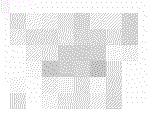

 Unit 3: Venn Diagrams
Constructing Venn Diagrams
Summary of Principles for Making Venn Diagrams
Summary of Principles for Reading Venn Diagrams
Exercises on Venn Diagrams
Practice Quiz 1 - Interactive
Practice Quiz 1 - Solutions
Practice Quiz 4 - Interactive
Practice Quiz 4 - Solutions
Practice Quiz 5 - Interactive
Practice Quiz 5 - Solutions
A Venn diagram provides a way to represent information
about individuals and groups. In English, some of the kinds of
information conveyed by Venn diagrams is expressed using
quantifier terms such as `all', `some', and `none'. We use
regions labelled with capital letters to represent groups and
we use lowercase letters to represent individuals. Together,
these components give us a visual representation of the
relations we are interested in. By constructing a diagram that
represents some initial set of relations, we can often
immediately deduce other relations from the diagram. These
include relations between groups as well as membership of
particular individuals in groups.
The basic form of the Venn diagram is three intersecting circles inside a box. We have an
example of this basic form in Figure VENN-1. In this diagram, each of the circles represents a
group of individuals or objects that have some common property or characteristic. We can
think of the circles as a fence drawn around these individuals. Each of the numbered regions
formed by the intersection of the circles also represents a group. We normally label the circles
with a capital letter that stands for the features the things in the circle have in common. Let A
stand for Albanians, B stand for barbers, and C stand for cello players. Then in Figure VENN-1,
anything in regions 1, 4, 6, and 7 is an Albanian, anything in regions 4 and 7 is an Albanian
barber, and anything in region 7 is an Albanian barber that plays the cello. Notice that region 8
outside all the circles is where we would find those individuals that are not Albanians, barbers,
or cello players.
We show that a region is empty by shading it. For example, in Figure VENN-2 we have shaded regions 1 and 6 to show that they are empty. What exactly does this mean in terms of our three properties? If regions 1 and 6 are empty, then anything in circle A must be in regions 4 and 7. But regions 4 and 7 are also inside circle B. So anything in circle A must also be in circle B. Or to put is another way, all Albanians are barbers.
This gives us a method for representing the information
given in an English sentence of the form `All S are P', where S
is the subject of the sentence and P is the predicate. We draw
a Venn diagram and label one of the circles S and another P.
Then we shade the part of the circle labeled S that is outside
the circle labeled P. Sometimes, though, the subject of the
English sentence is not represented by an entire circle. Take
for example the sentence `All Albanian barbers play the cello'.
There is no circle in our diagram representing Albanian
barbers. Instead, they are represented by the two regions 4 and
7. What the English sentence says is that everything in these
two regions is a cello player, i.e., is inside circle C. But
region 4 is outside circle C. So to show that all Albanian
barbers play the cello, we must shade region 4 as in Figure
VENN-3. In general, then, to show that all S are P, we identify
the region in the diagram corresponding to S (call this the
S-region) and shade any part of this region that is outside the
P-region.
What information do we represent if we shade regions 4 and
7 as in Figure VENN-4? It tells us that the intersection of the
Albanian circle and the barber circle is empty. So no Albanians
are barbers. Conversely, no barbers are Albanians. How would we
then represent the information that no Albanian barbers are
cello players? We would find the region that represents the
Albanian barbers (i.e., the football-shaped region made up of
regions 4 and 7) and shade the portion of that region where
cello players might be found (i.e., the part inside circle C).
In general, to represent an English sentence of the form `No S
are P', we shade the intersection of the S-region and the
P-region.
People often find the word `only' confusing. Consider the
sentence `Only citizens can vote'. How would we represent this
in a Venn diagram? The first idea most people have is that we
shade the part of the citizen-region outside the voter-region.
Look at Figure VENN-5 where C stands for citizens, V for
voters, and M for minors (in this case, persons under 18). If
we follow our first instinct and shade all of the C-region
outside the V-region, what we end up saying is that all
citizens can vote, including minor citizens. There is no
unshaded part of the minor-citizen-region outside the
voter-region. Something has gone wrong. It's true that only
citizens can vote, but it certainly isn't true that all
citizens (including minors) can vote. We have represented
something that we did not intend to represent.
Let's think about this further. If only citizens are voters, then all voters must be citizens. What we want to do, then, is shade all of the voter-region that is outside the citizen-region as in Figure VENN-6. And in general, to represent `Only S are P', you should shade all of the P-region outside the S-region. Perhaps the safest way to remember this is just to reverse an `only' and change it to an `all' whenever you see it: `Only S are P' is diagrammed the same way as `All P are S'.
Shading, then, is the operation we use to represent the information that some region of a Venn diagram is empty. But how do we show that a region is occupied? We will use letters to represent individuals and put those letters in the regions they occupy. Since we are using capital letters to represent properties or features of things, we will use lower case letters to represent individuals. Sometimes we will know something about a particular individual. We might know, for example, that George is a barber who plays the cello. We can use the letter g to represent George in a diagram. Since we know who g stands for, we say that it is a constant. Other times, we may only know that something or other is in a region, for example, that there must be Albanian barbers although we don't know who they are. Then we will use an x, y, or z as a variable that stands for one of these unknown Albanian barbers.
To show that George is a cello-playing barber, we need to
put a g in every part of the cello-playing-barber-region, i.e.,
in every part of the intersection of circles B and C. So we put
a g in regions 5 and 7. To show that George is a single
individual, we link the two g's with a curved line called a
bridge. We also want to show that something is an Albanian
barber; so we put x's in regions 4 and 7 and connect them with
a bridge. The result is Figure VENN-7.
From Figure VENN-7, we can't tell whether George is
Albanian. He could be in either region 5 or 7. If he is in
region 7, he is Albanian. But if he is in region 5, he is not.
Suppose we learn that George and Ellen are not Albanian. We
represent this new information about George by blotting out the
g in region 7. But we don't have any e's in the diagram; so we
need to find another way to show that Ellen is not Albanian. We
do this by putting an e in each region outside circle A, i.e.,
in regions 2, 3, 5, and 8. Again, we connect these e's with
bridges. The result of these changes is shown in Figure
VENN-8.
We show that a region in a Venn diagram is empty, then, by shading that region. And we show that individuals either have or do not have various properties and features by adding constants or variables to the diagram or blotting out constants and variables. We can also read information from a Venn diagram. We find out that English sentences using the quantifiers `all', `no', and `only' are true by noticing which regions of the diagram are shaded, and we find out that sentences using names or the quantifiers `some' and `not all' are true by noticing where constants and variables are located in the diagram.
Look again at Figure VENN-8. If we learn that no Albanians play the cello, we will shade the intersection of circles A and C. This gives Figure VENN-9 which represents the following information:
But the diagram gives us more information. Notice that we have an x in the barber-region but no x in any unshaded part of the cello-player-region. That means that there is someone who is a barber that does not play the cello, i.e., that some barbers do not play the cello. Can we also conclude that some cello players are not barbers? We see that there is an e in the cello-player-region 3, which is outside the barber-region. But there are also e's inside the barber region. We know that Ellen is in region 2, 3, 5, or 8, but we can't locate her any better than that. So we cannot conclude that some cell players are not barbers.
On the next two pages, we have a summary of these and other
principles for representing information in Venn diagrams and
for reading information from Venn diagrams. The only way to
really get a feel for how we can use this method to form new
conclusions from the information we have is by practicing.
After the summaries of principles, you will find some exercises
and practice quizzes. Notice that we can use a Venn diagram
either to test whether an argument is reliable or to extract
new information from the information we already have. So Venn
diagrams are both a tool for evaluating arguments and a tool
for problem solving.
Return to top of page.
Summary of Principles for Making Venn Diagrams
| To represent this statement in your diagram... | do this. |
| 1. All S are P. | Shade all of the S-region outside the P-region. |
| 2. Some S are P. | Pick a letter near the end of the alphabet that does not occur in the diagram and write it in every part of the intersection of the S-region and the P-region. |
| 3. No S are P. | Shade the intersection of the S-region and the P-region. |
| 4. Some S are not P. | Pick a letter near the end of the alphabet that does not occur in the diagram and write it in every part of the S-region that is outside the P-region. |
| 5. Only S are P. | Shade every part of the P-region that is outside the S-region. |
| 6. Nothing is P. | Shade all of the P-region. |
| 7. c is a P. | If there are no c's in the diagram, write c in every part of the P-region. If there are c's in the diagram, blot out every c that is outside the P-region. |
| 8. c is not a P. | If there are no c's in the diagram, write c in every area that is not in P. Don't forget the region outside all the circles! If there are c's in the diagram, blot out every c that is inside the P-region. |
Summary of Principles for Reading Venn Diagrams
| This statement is guaranteed by a Venn diagram... | if the diagram satisfies this condition. |
| 1. All S are P. | Every part of the S-region that is not also a part of the P-region is shaded. |
| 2. Some S is P. | There is a letter that occurs in the intersection of the S-region and the P-region that doesn't occur in any unshaded area outside the intersection of the S-region and the P-region. |
| 3. No S is P. | The intersection of the S-region and the P-region is shaded. |
| 4. Some S is not P. | There is a letter that occurs only in the S-region that doesn't occur in any unshaded part of the P-region. |
| 5. Only S are P. | Every part of the P-region that is not in the S-region is shaded. |
| 6. Nothing is P. | The entire P-region is shaded. |
| 7. c is a P. | c occurs in some unshaded part of the P-region and doesn't occur in any unshaded part of the diagram outside the P-region. |
| 8. c is not a P. | c occurs in some unshaded part of the diagram but doesn't occur in any unshaded part of the P-region. |
Use Venn diagrams to determine whether the grounds guarantee
the claims in the following arguments. To do this, represent
the grounds in the Venn diagram, then see if the diagram
guarantees the claim.
Solutions.
| Go to : | top of page. | First Exercises | Class materials |
| Send comments to | Dr. Nute |
dnute@ai.uga.edu |
the AI Center |
| produced for the | Philosophy | department | at UGA. |
| Last modified | 8/30/98.cvbii |